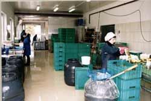
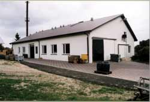
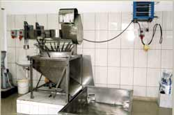

Witamy na naszej stronie,
Jan Kowalski
Firma DYSPOL zajmuje sie od 1990 roku produkcja ogorkow kwaszonych oraz kapusty kwaszonej. Nasze produkty przygotowywane sa w beczkach wg. tradycyjnych receptur. Surowce pochodza z ekologicznie czystych terenow woj. lubelskiego - Pojezierze Leczynsko-Wlodawskie oraz Dolina Ciemiegi.
Nasza firma zajmuje sie rowniez uprawa kwiatów balkonowych (pelargonie, surfinie) i storczyków.


